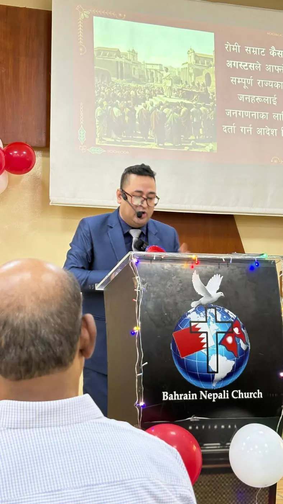
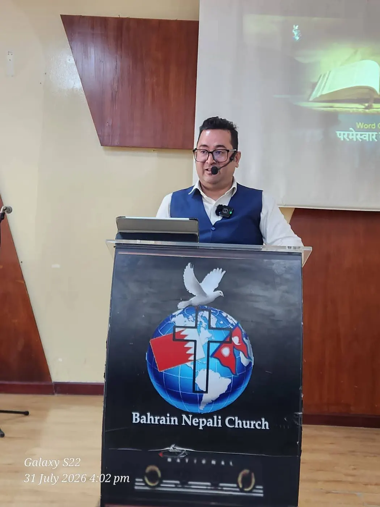
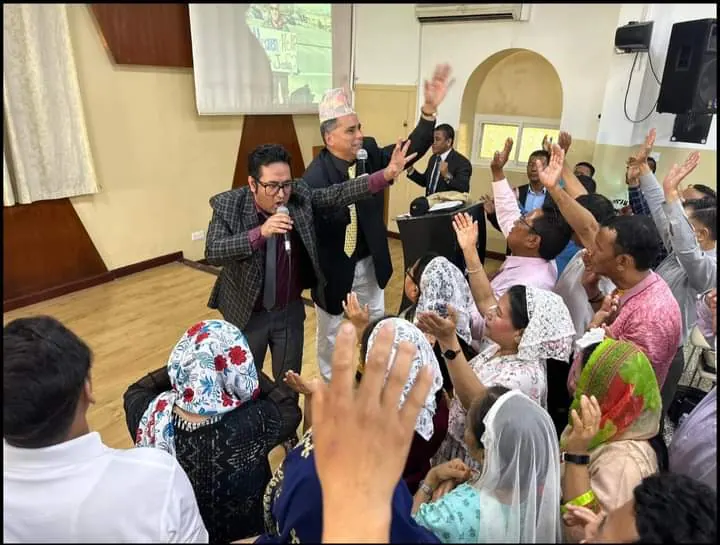
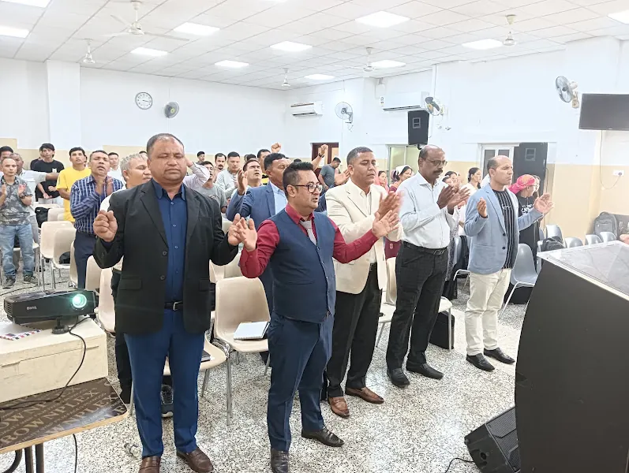

I am actively involved in Christian ministry through preaching, Bible teaching, discipleship, pastoral care, house fellowship, and church leadership. I currently serve as an Elder at Bahrain Nepali Church, where I support the spiritual growth of believers and participate in various ministry activities.
My ministry vision is to help Nepali-speaking believers grow in biblical knowledge, spiritual maturity, and faithful Christian living. Through sermons, Bible studies, training, translated resources, and digital tools, I seek to strengthen churches and equip believers for effective service.
म प्रचार, बाइबल शिक्षण, चेलापन, आत्मिक हेरचाह, घरेलु सङ्गति तथा मण्डली नेतृत्वमार्फत ख्रीष्टियन सेवकाईमा सक्रिय रूपमा संलग्न छु। हाल म बहराइन नेपाली चर्चमा एल्डरका रूपमा सेवा गर्दै विश्वासीहरूको आत्मिक वृद्धिमा सहयोग गर्नुका साथै विभिन्न सेवकाईसम्बन्धी कार्यहरूमा सहभागी हुँदै आएको छु।
नेपालीभाषी विश्वासीहरूलाई बाइबलीय ज्ञान, आत्मिक परिपक्वता र विश्वासयोग्य ख्रीष्टियन जीवनमा अघि बढ्न सहायता गर्नु मेरो सेवकाईको दर्शन हो। प्रवचन, बाइबल अध्ययन, तालिम, अनुवादित सामग्री तथा डिजिटल साधनहरूद्वारा मण्डलीहरूलाई सुदृढ बनाउनु र विश्वासीहरूलाई प्रभावकारी सेवाका लागि सुसज्जित गर्नु मेरो उद्देश्य हो।
Ministry in Action
सेवकाईका झलकहरू



